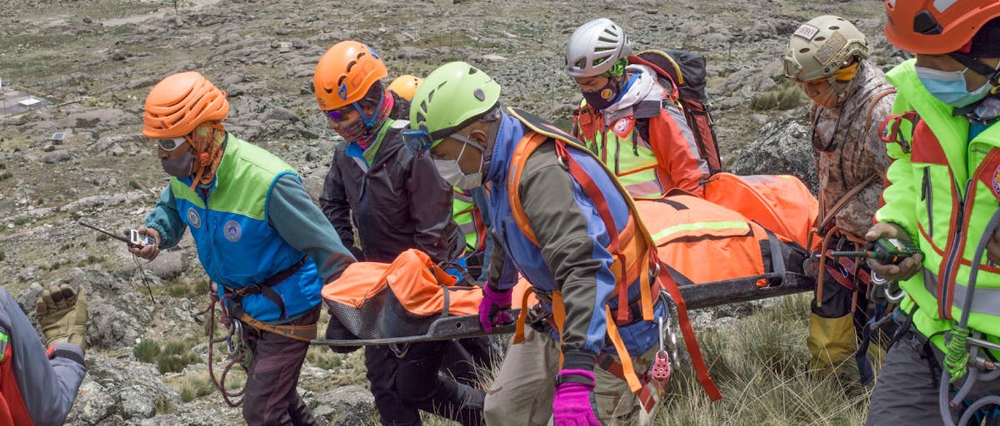

We are the Kalmont Mountain Rescue and Safety team: The Blizzard Yetis
The Blizzard Yetis' Team is a dedicated group of highly trained volunteers committed to ensuring the safety of adventurers, hikers, and residents in the rugged terrain surrounding our town of Kalmont. Nestled in the heart of the Kalmont Range, we specialize in search and rescue operations, emergency response, and outdoor safety education. Whether responding to lost hikers, injured climbers, or extreme weather conditions, our team works tirelessly—day or night—to protect and assist those in need. With deep knowledge of the mountains and a passion for community service, we stand ready to make every journey in Kalmont's wilderness a safer one.
Our Mission:
The Blizzard Yetis' Team is dedicated to preserving life and promoting safety in the Kalmont wilderness. Our mission is to provide swift, skilled, and compassionate search and rescue services, ensuring that those in distress receive the help they need, no matter the conditions. Through education, prevention, and emergency response, we strive to minimize risks and enhance outdoor safety for all who explore our mountains. Committed to teamwork, integrity, and community service, we stand as a lifeline for adventurers, ensuring that everyone returns home safely.
What we do:
The Kalmont Mountain Rescue & Safety Team provides expert search and rescue services, emergency medical assistance, and outdoor safety education in the Kalmont wilderness. Our highly trained volunteers respond to lost, injured, or stranded individuals, navigating challenging terrain and extreme conditions to bring them to safety. We work closely with local authorities and first responders to coordinate rescue efforts and ensure rapid response times. Beyond emergency operations, we actively promote outdoor safety through training programs, workshops, and community outreach, helping adventurers prepare for the unpredictable nature of the mountains. Whether in times of crisis or through proactive education, we are committed to protecting those who explore Kalmont's rugged landscapes.
Meet the Yetis:
Captain James "Jim" Calloway - Team Leader
Miley Whitaker - Search & Rescue Coordinator
Emily Chong - Lead Paramedic & Medical Specialist
Ryan O'Donnell - Technical Rescue Expert (Ropes & Climbing)
Maya Jensen - Swiftwater Rescue Specialist
Olivia Tran - Communications & Logistics Officer
Ben Carter - Wilderness Survival & Navigation Expert
Sophia Ramirez - Avalanche & Cold Weather Specialist
Logan Pierce - K-9 Search Unit Handler (Dog: Ranger)
Tyler Brooks - Volunteer Training & Safety Educator
Emma Lawson - Drone & Technology Operations Specialist
Nathan Zhang - Equipment & Gear Technician
Jessica Patel - Community Outreach & Fundraising Coordinator
Join Us
You too can be involved on our operations and Join our team of dedicated volunteers to make the beautiful mountains of Kalmont safer for everyone to enjoy.
Volunteer programs
Join us to make a difference—your volunteer support helps save lives and protect the community.
Donate
Your donations empower us to save lives and keep the community safe.
Our History :
The Blizzard Yetis' Mountain Rescue & Safety Team was founded in 1974
After a severe blizzard stranded a group of hikers in the Kalmont Range, prompting local volunteers to band together for a daring rescue. Recognizing the need for an organized response team, a group of experienced mountaineers, first responders, and community leaders officially established the unit, dedicated to assisting those in distress in the rugged terrain. Over the decades, the team has evolved, incorporating advanced training, specialized equipment, and modern technology, such as drones and GPS tracking, to enhance their rescue operations. From avalanche recoveries to swiftwater rescues, they have become an essential lifeline for adventurers and residents alike. Today, the Blizzard Yetis' Mountain Rescue & Safety Team remains a proud, volunteer-driven organization committed to preserving life and promoting safety in the ever-changing wilderness of the Kalmont region.